말씀 집회
Bible Session
주제 말씀 갈라디아서 2:20을 따라 아침과 저녁으로 말씀을 듣습니다. 전문강사 6인이 나누어 전하는 말씀으로 이 시대 다음 세대의 정체성을 다시 세웁니다.
제46차 청소년 바이블컨퍼런스
More Like Jesus · 갈라디아서 2:20
말씀으로 발견하는 정체성, 삶으로 이어지는 믿음. 2027년 겨울, 가평 승동기도원에서 청소년과 지도자가 같은 자리에 서는 2박 3일이 열립니다.
전문강사 6인의 말씀 집회와 지도자세미나, 팀미션, 사역자 결의식, 그리고 마지막 밤의 CELEBRATE까지 — 이번 컨퍼런스는 강의를 듣는 자리가 아니라 함께 서는 자리입니다.
Galatians 2:20 내가 그리스도와 함께 십자가에 못 박혔나니 그런즉 이제는 내가 사는 것이 아니요 오직 내 안에 그리스도께서 사시는 것이라
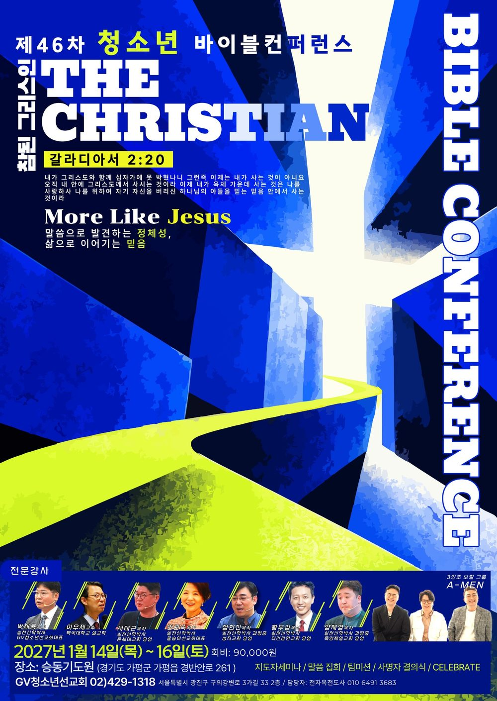
주제 · THE CHRISTIAN
정체성은 성취가 아니라, 누가 내 안에 사시는가로 정해집니다. 제46차 바이블컨퍼런스는 그 한 문장을 2박 3일 동안 함께 붙드는 자리입니다.
Where identity begins
우리는 무엇을 가졌는지로 자신을 설명하는 시대에 살고 있습니다. 성적과 스펙, 화면 속 숫자가 나를 규정합니다. 그런 세상 한가운데서 바울은 자기 삶을 설명하는 기준을 통째로 바꿉니다.
그의 문장은 오늘 우리에게도 그대로 옵니다. 정체성은 성취가 아니라, 누가 내 안에 사시는가로 정해집니다.
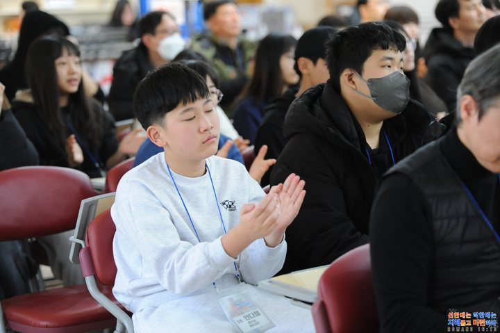
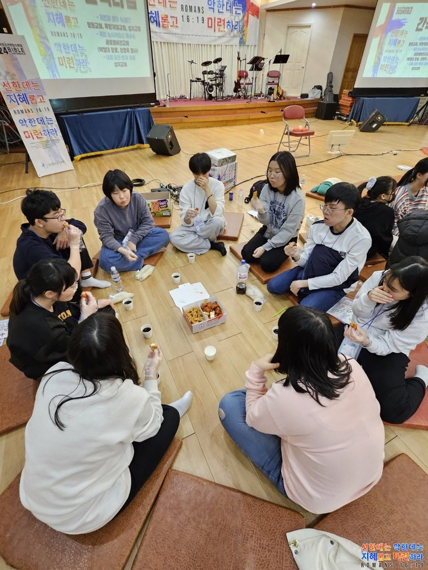
Not I, but Christ
내가 그리스도와 함께 십자가에 못 박혔나니 그런즉 이제는 내가 사는 것이 아니요 오직 내 안에 그리스도께서 사시는 것이라 Galatians 2:20
이 한 문장을 2박 3일 동안 함께 붙듭니다. 강의를 듣고 지나가는 자리가 아니라, 아침과 저녁으로 같은 말씀 앞에 다시 서는 자리입니다.
From hearing to standing
그래서 이번 컨퍼런스는 말씀 집회에서 듣고, 지도자세미나에서 세워지고, 팀미션에서 함께 부대끼고, 사역자 결의식에서 결단하고, CELEBRATE에서 함께 기뻐하는 흐름으로 이어집니다.
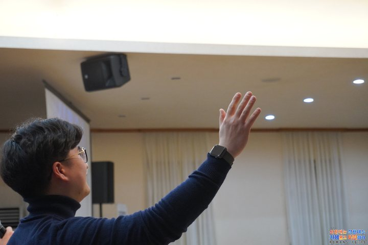
One table, three days
교회와 학교, 단체가 달라도 한 자리에 모여 같은 말씀을 붙들 때 다음 세대는 다시 일어섭니다. 2박 3일 동안 청소년과 지도자가 같은 식탁에 앉아 같은 말씀을 나눕니다.
열 가지 프로그램
바이블컨퍼런스는 매년 검증된 핵심 프로그램으로 진행됩니다. 말씀 집회와 공동체 미션, 깊은 기도와 파송의 순서로 2박 3일이 촘촘히 이어집니다.
Bible Session
주제 말씀 갈라디아서 2:20을 따라 아침과 저녁으로 말씀을 듣습니다. 전문강사 6인이 나누어 전하는 말씀으로 이 시대 다음 세대의 정체성을 다시 세웁니다.
Team Mission
각 조별로 상황에 맞는 미션을 주어 공동체 활동을 진행합니다. 성경 구절 암송부터 사진 미션까지 다양한 과제를 함께 해결하며 팀 단합과 동역을 배웁니다.
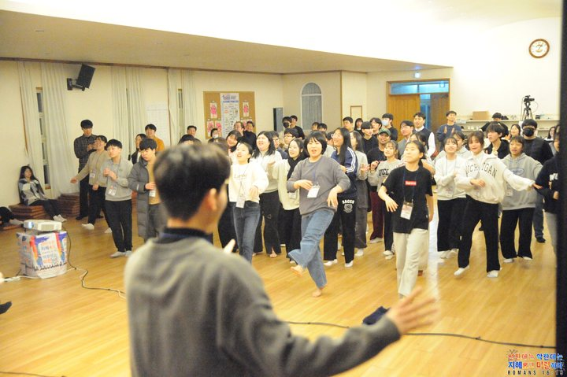
Gospel Recreation
신나는 레크리에이션 시간 속에서 그리스도인의 인내, 순종, 격려, 배려가 무엇인지 몸으로 배워가고 알아가는 공동체 훈련 시간입니다.
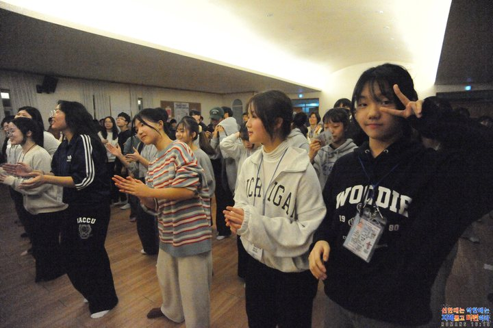
God Blessing You
컨퍼런스에 참가한 모두를 대상으로 감사한 사연을 받아 함께 축복하는 시간입니다. 소소하지만 큰 감사가 담긴 사연의 주인공들을 주님의 이름으로 모두가 축복합니다.
Vision Prayer
참석한 청소년들의 꿈과 비전에 맞게 모두가 한마음으로 기도하는 시간으로, 자신의 부르심을 향해 더욱 구체적인 기도를 올려드리는 깊은 영적 시간입니다.
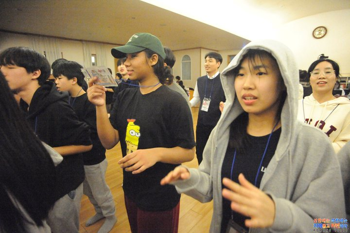
Bible Post Game
성경 말씀을 활용한 포스트 게임으로, 각 코너가 성경 내용을 자연스럽게 이해하도록 구성돼 있습니다. 조별로 게임을 풀어가며 재미와 말씀, 협동심과 배려를 함께 배웁니다.
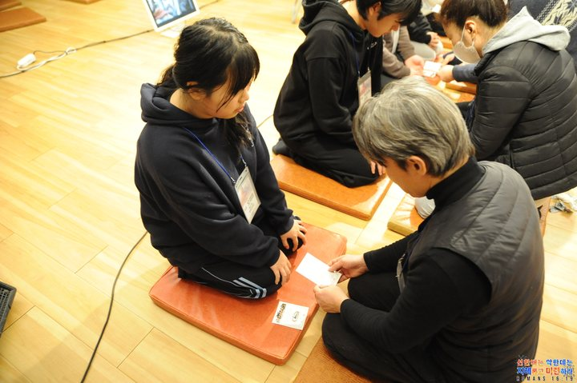
Commitment Badge
받은 은혜를 가지고 세상으로 나아가 사명을 감당할 것을 결단하는 시간입니다. 교역자와 선생님이 1:1로 만나 기도하며 GV가 제작한 ‘사명자 뱃지’를 달아주고 그 의미를 기억합니다.
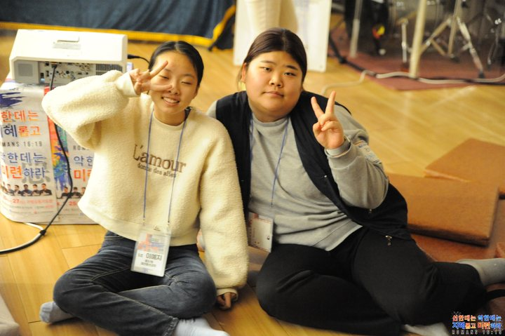
Agape Feast
마지막 집회가 끝나고, 그 넘치는 사랑과 은혜를 함께한 친구들·선생님·스탭들과 함께 떡을 떼며 나누는 시간입니다. 서로를 격려하고 사랑한다고 고백하는 아름다운 시간입니다.
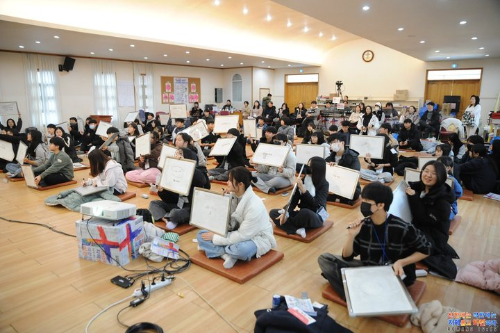
Bible Challenge
성경 퀴즈를 재미있는 구성으로 나누어 함께 풀어가는 시간입니다. 50문제를 모두 풀어 최종 우승자가 되면 GV에서 준비한 소정의 장학금을 받게 됩니다.
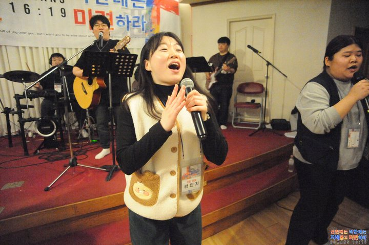
Leaders & A-MEN Concert
교사와 교역자들은 컨퍼런스 기간 중 별도 지도자 세미나로 훈련받으며, 마지막 날에는 3인조 보컬 그룹 A-MEN의 메세지 콘서트와 워십 & 프레이즈로 함께 기뻐합니다.
2박 3일 표준 일정
2027년 1월 14일 목요일 오후부터 16일 토요일 오전까지, 들어옴과 말씀과 파송의 세 날입니다.
Day 1 · 1.14 (목)
들어옴 · 함께 섬
Day 2 · 1.15 (금)
말씀 · 공동체 · 결단
Day 3 · 1.16 (토)
확인 · 찬양 · 파송
* 바이블컨퍼런스는 매년 동일한 표준 프로그램 흐름으로 운영되며, 제46차 세부 강사 배정과 시간은 진행 상황에 따라 일부 조정될 수 있습니다.
전문강사 6인
설교와 상담, 청소년 사역의 자리에서 오래 일해 온 여섯 사람이 말씀을 나눕니다.

KEYNOTE · 대표
글로벌비전교회 담임 · (사)GV청소년문화교육원 대표
백석대 기독교전문대학원 실천신학 박사(Th.D.)
청소년 사역의 위기는 프로그램 부족의 문제가 아니라 관계의 단절에서 시작됩니다.

이우제 교수
백석대 설교학
Th.D.

서태근 목사
온세대교회 담임
실천신학 박사

정현진 목사
성지교회 담임
실천신학 박사 과정

황우성 목사
더건강한교회 담임
실천신학 박사

양재영 목사
목양제일교회 담임
실천신학 박사 과정
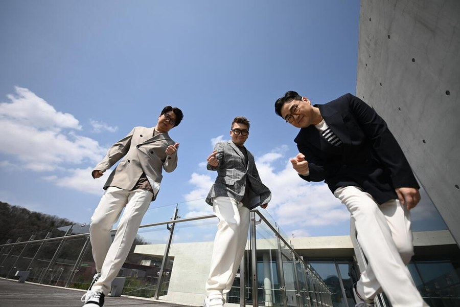
Special Stage
A-MEN
3인조 보컬 그룹 에이맨(강중현 · 정기세 · 김성호)이 마지막 밤 CELEBRATE 무대에 섭니다. 메세지 콘서트와 워십 & 프레이즈로 함께 기뻐하는 시간입니다.
비전컨퍼런스에서도 함께합니다 →참가 안내
청소년과 청소년 사역자·지도자가 함께 참가합니다. 교회 단위로 신청서를 보내 주세요.
개인 침구(이불·베개)와 세면도구, 성경, 필기구를 챙겨 주세요. 단체 준비물과 숙소 배정은 접수 후 안내합니다.
Bank Transfer
국민은행866401-04-106794
예금주 GV청소년선교회 · 입금자명은 신청자 이름으로
신청서
신청서를 내려받아 작성한 뒤 이메일로 보내 주세요. 교회 단위 신청은 교회용, 스탭 지원은 스탭용 신청서를 씁니다. 담당자 확인 후 접수 안내를 드립니다.
pjypjy323@hanmail.net
메일 제목 — 교회는 [바이블컨퍼런스 참가신청] ○○교회 · 스탭은 [바이블컨퍼런스 스탭신청] 이름 · 문의 02-429-1318
※ 브라우저 보안상 첨부 파일은 자동으로 붙지 않습니다. 작성한 신청서를 메일에 직접 첨부해 주세요.
※ 신청서는 한글(HWPX) 파일입니다. 한글 2014 이상이나 한글 뷰어(휴대폰은 한글 뷰어 앱)에서 여실 수 있습니다. 교회용 신청서는 20명까지 적을 수 있고, 인원이 더 많으면 한 장 더 작성해 주세요. 비전컨퍼런스 신청서는 준비되는 대로 이 자리에 올립니다.
※ 이번 단계는 서류 접수(이메일)만 안내합니다. 온라인 등록 폼과 등록 교회 명단은 다음 단계에서 연결합니다.
오시는 길
경춘선 가평역에서 차로 약 15분, 서울에서 승용차로 1시간 30분 거리입니다.
승동기도원 약도실제 축척과 다릅니다 · 37.8283, 127.4759
서울양양고속도로 화도IC → 신경춘로(청평·상천) → 가평오거리 → 가평군청 앞 → 경반리 · 석봉로191번길 → 승동기도원. 내비게이션에 주소를 입력하세요.
경춘선 가평역 하차(용산·청량리에서 ITX-청춘 이용). 가평역에서 기도원까지 약 5km, 차로 약 15분입니다.
동서울터미널·상봉터미널에서 가평시외버스터미널행. 터미널에서 기도원까지 약 5km입니다.
Address
경기도 가평군 가평읍 경반안로 261
기도원 031-581-6007 · 주차 가능(기도원 자체 주차장) · 문의 02-429-1318

이 페이지 주소
aichurchsystem.github.io/Church/gv-youth/
bible-conference.html
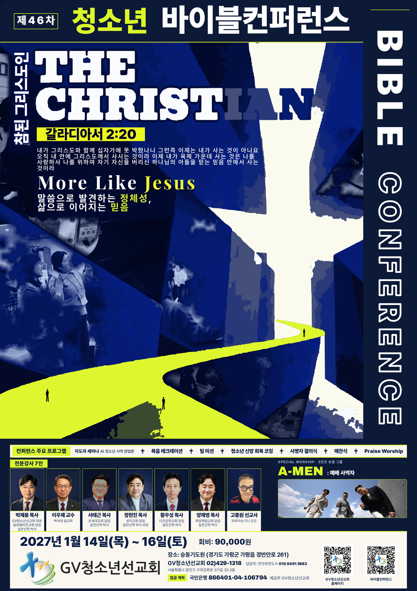
제46차 청소년 바이블컨퍼런스 포스터 · GV청소년선교회